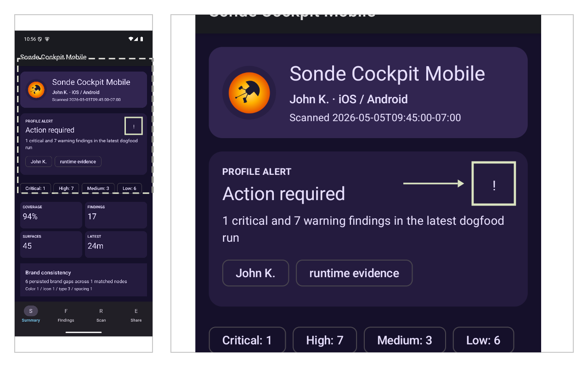
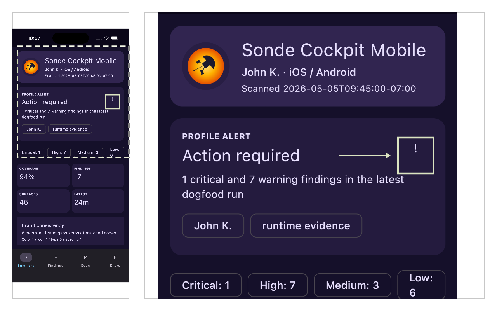
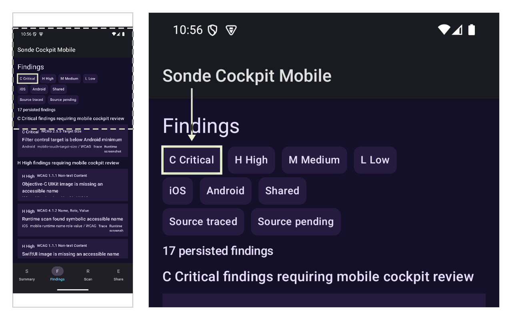
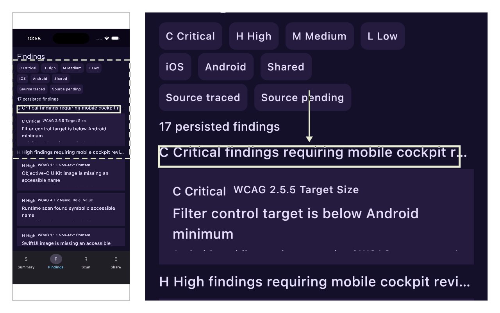
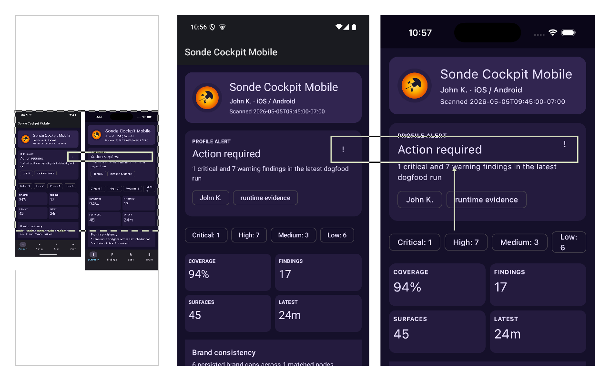

Overview
This file-direct report loads runtime data from relative assets, preserves anchors without a server, and uses evidence from the cockpit-mobile accessibility fixture.
Sonde Score
860/ 1000
Severity breakdown
- Needs remediation
- 1Critical6High3Medium
- Evidence package ready
- 10Verified source anchors7Evidence screenshots
- Public package boundary
- 0Private artifacts exposed
SwiftUI — iOS runtime
High
SwiftUI image is missing an accessible name
SwiftUI — iOS runtime
SwiftUI image is missing an accessible name
The SwiftUI Image renders as meaningful content in the profile alert row but exposes no accessibilityLabel — VoiceOver announces nothing and the UIKit transform inherits the gap.
WCAG 1.1.1 Non-text Content

Add a product-specific .accessibilityLabel(...) modifier or mark the Image decorative with .accessibilityHidden(true) before the UIKit transform runs.
SwiftUI — iOS runtime source evidence
struct SondeDogfoodSwiftUIImageMissingLabel: View {
var body: some View {
HStack {
Image(systemName: "person.crop.circle.badge.exclamationmark")
.font(.title2)
Text("Profile alert")
}
}
}
Compose Multiplatform — Android runtime
High
Runtime scan found symbolic accessible name
Compose Multiplatform — Android runtime
Runtime scan found symbolic accessible name
The local runtime accessibility tree exposes the cockpit-mobile seed icon action as a symbolic name instead of a durable accessible name.
WCAG 4.1.2 Name, Role, Value

Add a descriptive Compose semantics contentDescription or replace the icon-only action with a labelled control, then rerun the local runtime handoff.
Compose Multiplatform — Android runtime source evidence
@Composable
private fun StaticDogfoodSeedAction() {
IconButton(
onClick = {},
modifier = Modifier.testTag(SondeMobileTestTags.StaticDogfoodSeedAction),
) {
// Intentional Phase 9 M2 dogfood seed: symbolic text is not a durable accessible name.
Text("!")
}
}
Compose Multiplatform — iOS runtime
High
Runtime scan found symbolic accessible name
Compose Multiplatform — iOS runtime
Runtime scan found symbolic accessible name
The local runtime accessibility tree exposes the cockpit-mobile seed icon action as a symbolic name instead of a durable accessible name.
WCAG 4.1.2 Name, Role, Value

Add a descriptive Compose semantics contentDescription or replace the icon-only action with a labelled control, then rerun the local runtime handoff.
Compose Multiplatform — iOS runtime source evidence
@Composable
private fun StaticDogfoodSeedAction() {
IconButton(
onClick = {},
modifier = Modifier.testTag(SondeMobileTestTags.StaticDogfoodSeedAction),
) {
// Intentional Phase 9 M2 dogfood seed: symbolic text is not a durable accessible name.
Text("!")
}
}
Compose Multiplatform — Android Material Design (target size)
Critical
Filter control target is below Android minimum
Compose Multiplatform — Android Material Design (target size)
Filter control target is below Android minimum
The real cockpit-mobile Findings screen renders compact 32dp filter controls below Android's 48dp minimum target size — touch users with motor impairments can miss the control entirely.
WCAG 2.5.5 Target Size

Increase the filter control hit area to at least 48dp while preserving the grouped findings density.
Compose Multiplatform — Android Material Design (target size) source evidence
@Composable
private fun CompactFilterChip(
selected: Boolean,
onClick: () -> Unit,
label: String,
modifier: Modifier = Modifier,
) {
Surface(
modifier = modifier
.height(SondeMobileTokens.spacingMd * 2)
.clickable { onClick() }
.semantics {
role = Role.Button
contentDescription = label
},
Compose Multiplatform — iOS HIG (Dynamic Type)
Medium
Finding group heading can truncate under iOS Dynamic Type
Compose Multiplatform — iOS HIG (Dynamic Type)
Finding group heading can truncate under iOS Dynamic Type
Under the iOS runtime text scale used by the simulator, the Findings group heading truncates before its full label fits — readers using larger text lose the section context.
WCAG 1.4.4 Resize Text

Keep heading text wrapping and spacing token-driven so the heading reflows instead of truncating.
Compose Multiplatform — iOS HIG (Dynamic Type) source evidence
groups.forEach { group ->
item {
Text(
"${severityGlyph(group.severity)} ${group.severity.name} findings requiring mobile cockpit review",
modifier = Modifier.testTag("${SondeMobileTestTags.FindingSeverityGroupPrefix}${group.severity.name}"),
style = MaterialTheme.typography.titleMedium,
maxLines = 1,
overflow = TextOverflow.Ellipsis,
)
Compose Multiplatform — Material Design brand parity (color drift)
Medium
Mobile brand consistency gap (color drift)
Compose Multiplatform — Material Design brand parity (color drift)
Mobile brand consistency gap (color drift)
The Android render of the summary action accent shipped a different color than the brand reference. Cross-platform brand drift is invisible to single-platform audits but obvious when both renders are compared side-by-side.
Mobile Brand Consistency: color

Align the rendered Android color to the brand token defined in the design system.
Compose Multiplatform — Material Design brand parity (color drift) source evidence
@Composable
private fun StaticDogfoodSeedAction() {
IconButton(
onClick = {},
modifier = Modifier.testTag(SondeMobileTestTags.StaticDogfoodSeedAction),
) {
// Intentional Phase 9 M2 dogfood seed: symbolic text is not a durable accessible name.
Text("!")
}
}
UIKit (Objective-C) — iOS runtime
High
Objective-C UIKit image is missing an accessible name
UIKit (Objective-C) — iOS runtime
Objective-C UIKit image is missing an accessible name
The UIImageView is explicitly marked as an accessibility element with the image trait but carries no accessibilityLabel, so the SwiftUI Image transform inherits an unlabelled meaningful image.
WCAG 1.1.1 Non-text Content

Set avatarImageView.accessibilityLabel to a product-specific string in UIKit before the SwiftUI transform runs.
UIKit (Objective-C) — iOS runtime source evidence
- (void)configureDecorativeLookingAvatar {
UIImageView *avatarImageView = [[UIImageView alloc] init];
avatarImageView.isAccessibilityElement = YES;
avatarImageView.accessibilityTraits = UIAccessibilityTraitImage;
[avatarImageView.widthAnchor constraintEqualToConstant:44].active = YES;
[avatarImageView.heightAnchor constraintEqualToConstant:44].active = YES;
}
React Native — source trace
Medium
Hardcoded English accessibility label
React Native — source trace
Hardcoded English accessibility label
The `<Text>` element ships with a hardcoded English `accessibilityLabel`. Non-English users will hear the literal English string regardless of their locale.
Sonde Source Trace Availability
Replace the hardcoded `accessibilityLabel` with a localized string lookup before the screen reaches non-English users.
React Native — source trace source evidence
import { Text } from 'react-native';
export function ReactNativeProfileStatus() {
return <Text accessibilityLabel="Profile status" testID="profile.status" />;
}
React / TSX — WCAG static probe
High
Image element is missing the alt attribute
React / TSX — WCAG static probe
Image element is missing the alt attribute
The bare `<img>` element exposes no alt attribute, so assistive technologies announce the file path or nothing at all.
WCAG 1.1.1 Non-text Content (Level A)
Add `alt="description"` for informative images, or `alt=""` for decorative images.
React / TSX — WCAG static probe source evidence
export function BadImage(): ReactElement {
return <img src="/logo.png" />;
}
HTML — WCAG mechanical probe
High
Element has positive tabindex (focus order)
HTML — WCAG mechanical probe
Element has positive tabindex (focus order)
The `<button tabindex="3">` creates an unpredictable focus order — positive tabindex values jump out of natural DOM order and disorient keyboard users.
WCAG 2.4.3 Focus Order (Level A)
Use `tabindex="0"` to add to natural tab order, or `tabindex="-1"` for programmatic focus only. Rearrange DOM order to achieve the desired tab sequence.
HTML — WCAG mechanical probe source evidence
</nav>
<img src="logo.png">
<button tabindex="3">Submit</button>
</body>